Knowledge discovery
A multi-agent pipeline extracts strategic theories, illustrative cases, and practical scenarios from curated expert sources, then tags each item across CASEL competency, social skill, and scenario context.
arXiv preprint
1HKUST (GZ) 2Duke University 3MSRA 4Microsoft
SocialCoach builds expert-grounded knowledge, schedules practice with reinforcement learning, and closes the knowing-doing gap through immersive simulation and reflective coaching.
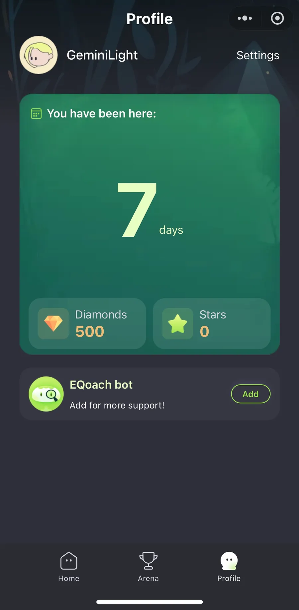
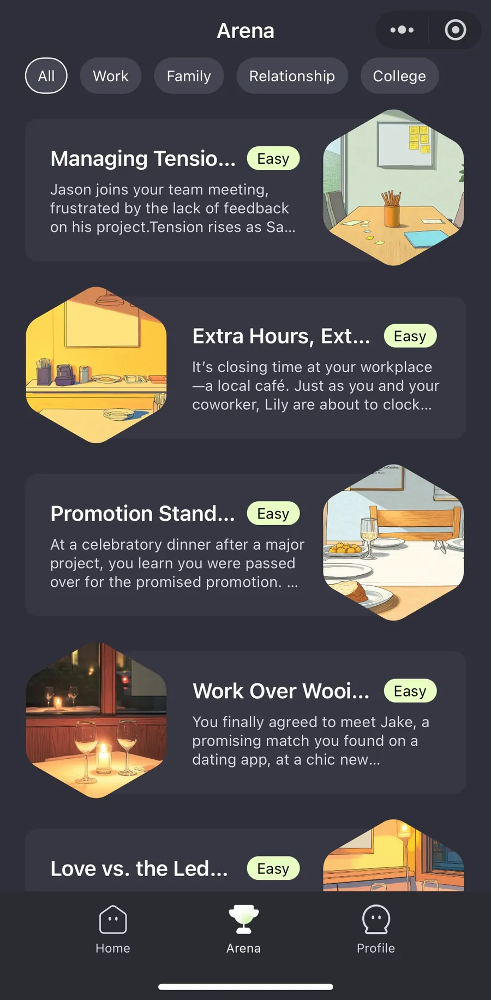
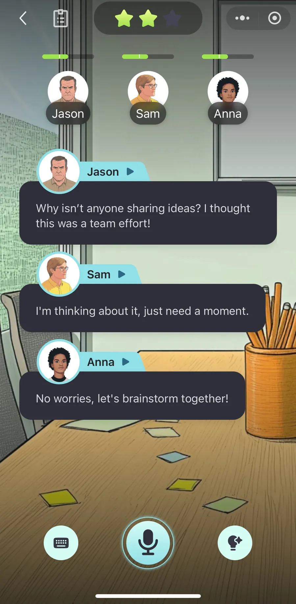
Research contribution
SocialCoach addresses the scarcity of expert social skill coaching by connecting four modules: automated knowledge discovery, dynamic learner profiling, RL-based practice scheduling, and pedagogically grounded reflective tutoring. The system is deployed in EQoach, a mobile-first practice product used for an early user study.
Method
The framework is designed around traceability: SocialCoach extracts, tags, retrieves, and adapts expert-derived material instead of asking a model to invent coaching knowledge on demand.
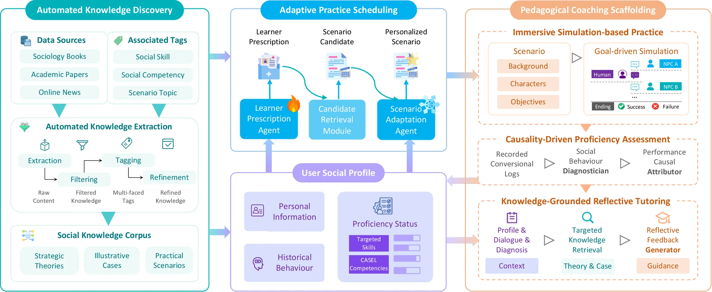
A multi-agent pipeline extracts strategic theories, illustrative cases, and practical scenarios from curated expert sources, then tags each item across CASEL competency, social skill, and scenario context.
The learner state combines demographics, personality traits, target skills, behavior history, and evolving proficiency ratings across social competencies.
A prescription-retrieval-adaptation policy turns a learner profile into targeted practice, balancing semantic retrieval with long-horizon pathway quality.
After practice, SocialCoach diagnoses behavior, attributes the cause of skill gaps, retrieves relevant theory or cases, and guides transfer with Socratic reflection.
Knowledge corpus
The corpus contains over 40,000 unique entries. Every item is organized so an agent can move from concept, to example, to practice without losing pedagogical grounding.
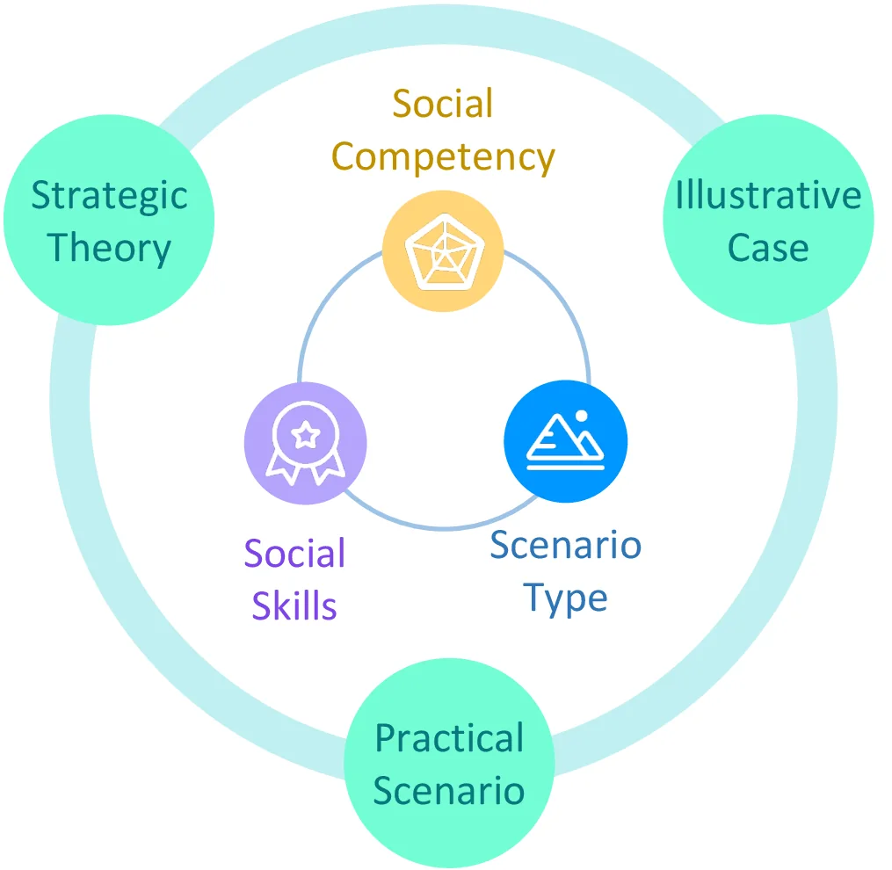
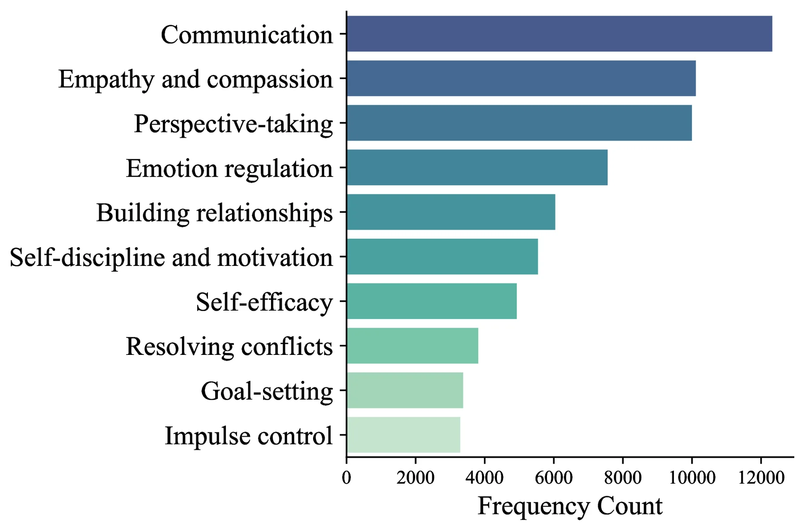
Evidence
The evaluation combines expert validation, simulated learner pathways, judge-rated tutoring comparisons, and a 50-participant EQoach user study.
Expert agreement
0.63 Fleiss' Kappa for corpus quality validationScheduling engagement
4.38 SocialCoach Qwen3-8B in 10-session pathwaysLearning gain
4.11 Judge-rated pathway learning valueUser study
50 Students and early-career professionals using EQoach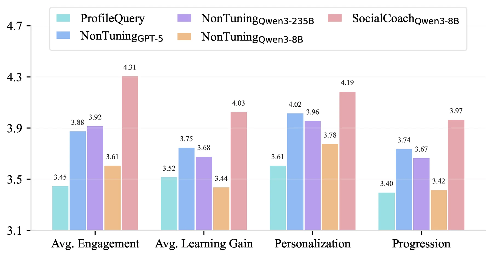
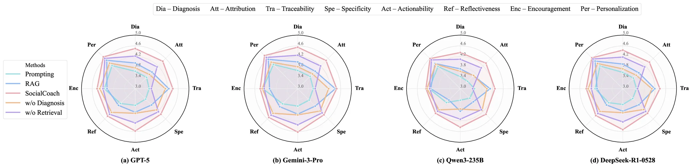
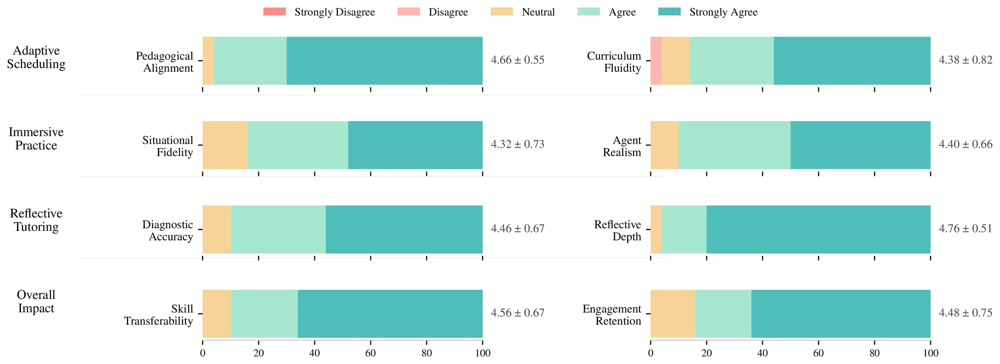
EQoach demo
EQoach turns the research system into a mobile-first product flow: profile the learner, choose a scenario, practice with an LLM-powered role, then receive reflective tutoring.
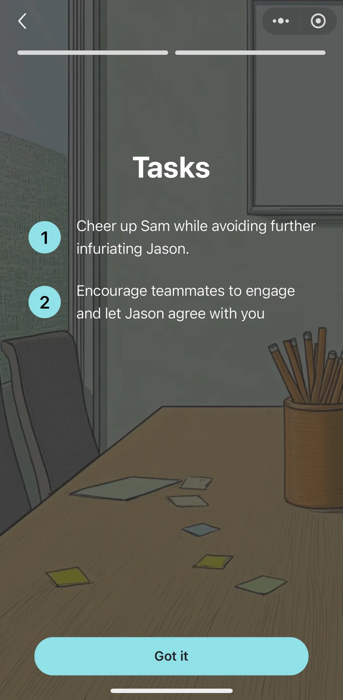
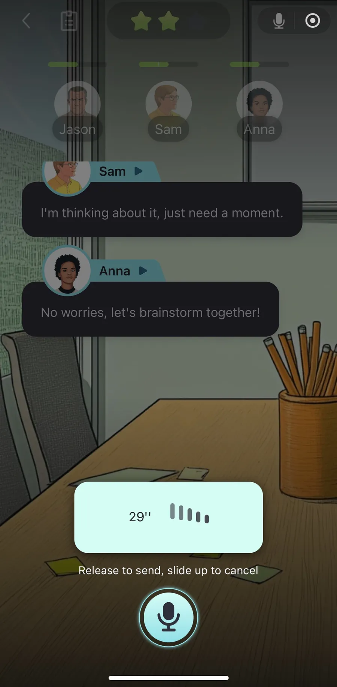
Resources
The page includes citation metadata, structured data, a sitemap, robots rules, and an
llms.txt file so both search engines and AI answer engines can identify the core claims.
@inproceedings{wang2026socialcoach,
title = {SocialCoach: Personalized Social Skill Learning with RL-based Agentic Tutoring and Practice},
author = {Wang, Tianfu and Xiong, Max and Lian, Jianxun and Zhu, Hongyuan and Hu, Zhengyu and Lei, Yuxuan and Gong, Linxiao and Li, Xiaofang and Tsai, Peiting and Yuan, Nicholas Jing and Zhang, Qi},
booktitle = {Proceedings of the 32nd ACM SIGKDD Conference on Knowledge Discovery and Data Mining},
year = {2026}
}